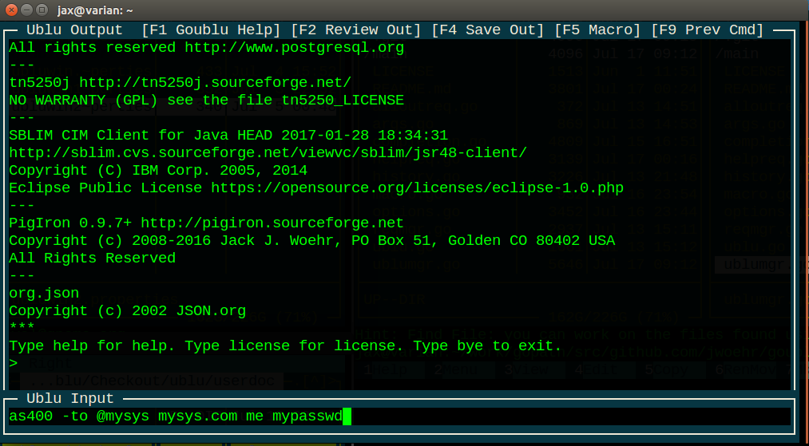
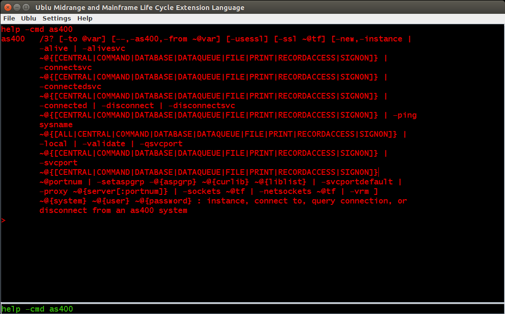
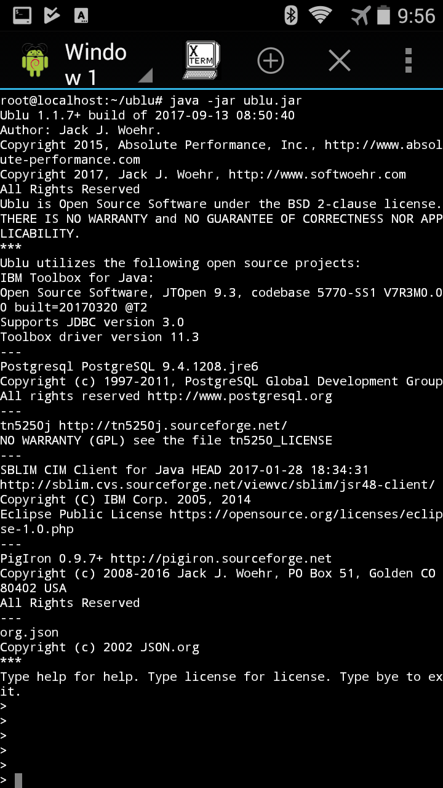
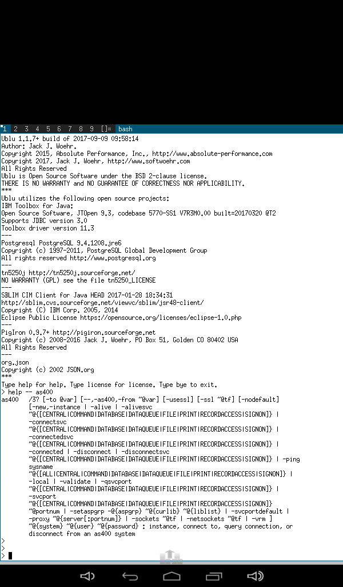
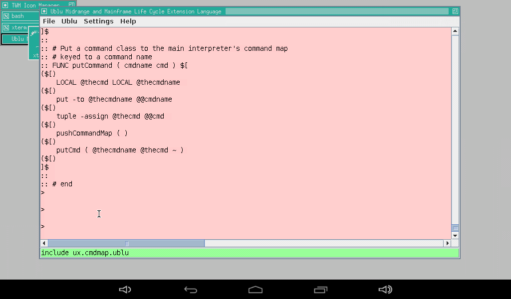
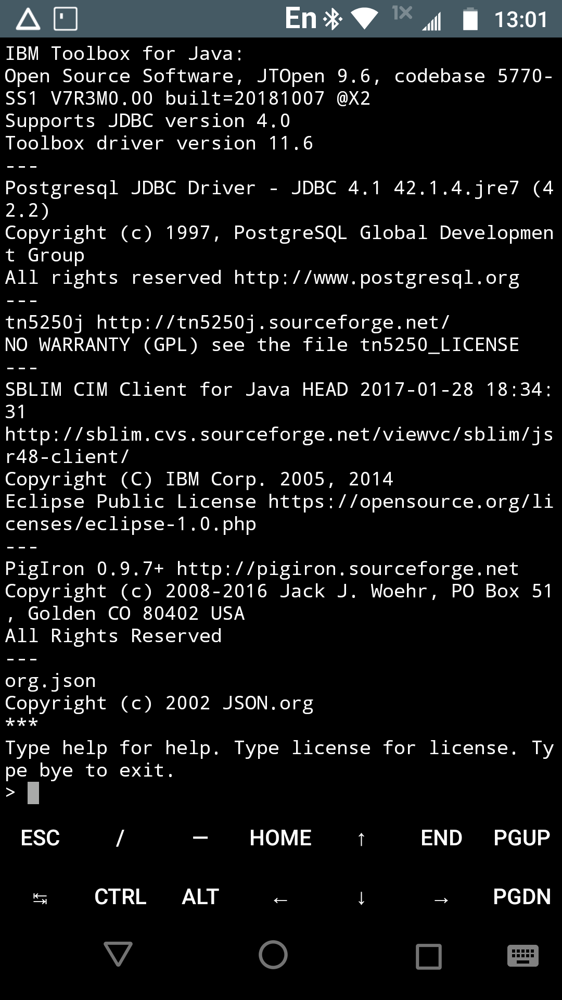
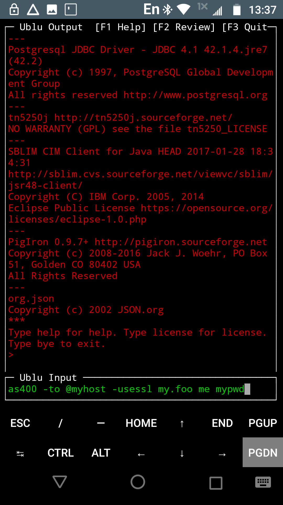

to the
Ublu
Midrange and MainframeLife Cycle Extension Language

jwoehr@softwoehr.com
All Rights Reserved
SoftWoehr LLC
http://www.softwoehr.com
PO Box 51
Golden, CO 80402-0051
USA
|
Guide to the UbluMidrange and MainframeLife Cycle Extension Language |
|
Copyright © 2016, 2022 Jack. J.
Woehr jwoehr@softwoehr.com All Rights Reserved SoftWoehr LLC http://www.softwoehr.com PO Box 51 Golden, CO 80402-0051 USA |
|---|
It's for people who just want an introduction to using Ublu, or who have downloaded and built Ublu, read enough of the Ublu Reference to know how to launch Ublu, and now want more help understanding Ublu.
The Guide is meant to be easy to read, and extra stuff you may not want to bother with is written like this in small italics.
Ublu is an interpretive language for remote systems programming of midrange or mainframe hosts from a Java platform such as Linux, Mac, OpenBSD or Windows. It also can run natively on IBM i ®, IBM z/OS USS ® or any other reasonable Java platform.
I wrote Ublu because I wanted a language to run on OpenBSD/Mac/Linux/Windows to perform ad-hoc process automation primarily on IBM i Series OS ®. I was supporting consulting clients by writing individual utility programs using JTOpen which I have used since 1998 to control the AS/400. I decided to consolidate the programs in a language, and the result is Ublu.
Additionally, Ublu can call Java directly allowing the user him- or herself to extend the language interpretively in nearly any direction desired.
It is convenient to operate legacy systems remotely from modern environments:
I also previously wrote PigIron, a Java bridge to IBM z/VM ® System Management API (SMAPI). I provide PigIron support in Ublu. I had been using my FIJI ForthIsh Java Interpreter to drive PigIron, which works very well but is arcane, and also ObjectRexx, which is a wonderful language which doesn't run on as many platforms as Java. Ublu turns out to be an excellent language environment for PigIron SMAPI operations.
Ublu is a new language which was coded quick and easy in Java on top of other open source libraries. The "quick and easy" approach derives from a work environment in which folks just wanted results and had no particular interest in the language itself.
Ublu is easy to build, install, read, and use. It is handsome but not beautiful. Ublu works like an interactive shell scripting language but also has some advanced language features such as compiling, tasking, debugging and a TCP/IP port server mode.
IF ELSE DO WHILE etc.), exception
handling, and even a multitasker and debugger.include other text
files.
When you've got your complete application written in Ublu,
there's an Ublu command gensh which autogenerates a
shell script to work under either bash or
ksh. The script takes arguments via command-line
switches and pass them to your program's top-level function.
The script effects a closure on your top-level
function.
For a formal summary of everything, see the Ublu Reference. That Reference tells you how to install and run Ublu and lists the Open Source project dependencies as well as documenting every command and facility built into Ublu.
Ublu is a work in progress and, like all "living" software,
likely to remain so. There are always more aspects to IBM i
programming to support. Everything that's in Ublu is there
because I/We needed it right then. The db
command was almost the first thing added, which is effectively an
interpretive shell around JDBC. On the other hand, we never
needed classic record file access because everyone on staff was
SQL-oriented and knew little about physical file access. Thus,
only later I added the file and record commands for classic
record file access.
Increasingly, Ublu is extended in Ublu itself (often using the
calljava
command). See the extensions directory.
If you find Ublu useful, please let me know!
If you find a bug, or wish to issue a feature request, you can create an issue in the issue tracker.
Currently I discuss Ublu on the Ublu, Java & JTOpen forum of the OSS on IBM i Ryver team.
/opt/ublu yielding
/opt/ublu/ublu.jar and /opt/ublu/lib/*
etc., then you can start simple command-line Ublu via java
-jar /opt/ublu/ublu.jar or you can proceed to get fancier
with ...
The basics are that you can run ublu, goublu, or windowing ublu without any of this setup if you understand the command lines sufficiently. But it's easier just to do it this way:
$HOME/work/ublu/li>sudo mkdir -p /opt/ublu/; cd /opt/ublu;
sudo ln -s $HOME/work/ublu/ublu.jar
sudo ln -s $HOME/work/ublu/extensions
sudo ln -s $HOME/work/ublu/examples
sudo ln -s $HOME/work/ublu/userdoc
~/.config/ublu/
.config/ublu/goublu.properties (assuming you have build and installed Goublu)#Goublu properties #Colors, directories, keystores, macros BgColorIn=ColorBlack FgColorIn=ColorGreen BgColorOut=ColorBlack FgColorOut=ColorRed UbluDir=/opt/ublu SaveOutDir=. JavaOpt=-Djavax.net.ssl.trustStore=/path_to/keystore JavaOpt=-Dublu.includepath=/opt/ublu/examples:opt/ublu/extensions Macro=mysys as400 -to @mysys -usessl MYSYS.COM MYPROFILE... etc. .config/ublu/ubluwin.properties#Ublu Windowing Properties #Sun Jul 02 18:00:59 MDT 2017 UbluTextAreaBGColor=ff000000 UbluTextAreaFGColor=e3e90000 UbluTextAreaFont=Liberation Mono UbluInputAreaFontSize=18 UbluInputAreaFontStyle=0 UbluTextAreaFontStyle=0 UbluInputAreaBGColor=ff000000 UbluInputAreaFont=Liberation Mono UbluTextAreaFontSize=18 UbluInputAreaFGColor=ff36b80b
~/.bash_aliases
alias ublu='java -jar /opt/ublu/ublu.jar $*'
alias gu='$GOPATH/bin/goublu -g PropsFile=/home/me/.config/ublu/goublu.properties $*'
alias gw='java -Djavax.net.ssl.trustStore=/home/me/keystores/ublutruststore -jar /opt/ublu/ublu.jar -w /home/me/.config/ublu/ubluwin.properties $*'
Now you can run Ublu:
ublu arg arg ...)gu arg arg
...)
gw arg arg
...)
Of course the config files are entirely optional and can be added later, or reference to them omitted entirely from the aliases you create to invoke Ublu.
C:\Ublu, and create Ublu Windowing
Properties config file as above in
C:\Users\YourLoginC:\Ublu\ublu.jar -w
C:\Users\YourLogin\ubluwin.propertiesNow you can run Ublu in windowing
mode. Alternatively, you can just java -jar
C:\Ublu\ublu.jar to run Ublu in a Windows command console,
which works well.
Here's a 256x256 Windows icon for your Ublu shortcut, save as
Ublu.ico and assign to the shortcut:
Ublu is mostly composed of commands and a language
interpreter. There are also are other Ublu features such as
server mode and the tasker, but commands and the language
interpreter are the nexus.
Ublu commands are like individual application programs which
are invoked with their arguments under the language interpreter.
Command arguments are often references to objects which have been
created by other commands. You usually don't have to know much
about objects passed from command to command other than what
they're supposed to represent.
Most arguments are passed to the dash-commands associated with the
command, e.g.
ask -to @answer -say ${ Do you wish to reply to this message? (y/n) }$
The ask command here has two dash-commands,
-to and -say. -to has an
argument which says to which variable to put the answer to
the question about to be asked the user, and -say
takes a quoted string
which is the prompt to the user.
Here is a link to the Ublu Reference's list of commands by
category.
TRY CATCH THROW
exception facility in Ublu allowing the program to catch errors
without losing its place in the executing program.and execution blocks${ like this }$
so it is easy for the loop to identify them and demand another line from the outer loop if the closing delimiter hasn't been found yet.$[ like this ]$
IF @truefalse THEN $[ command arg arg command arg arg
command arg ... ]$ ELSE $[ command arg ... ]$
As noted, these execution blocks can span multiple lines.ublu.xml reproduced here
via Code2HTML.share/jEdit
with instructions how to install it at the head of the mode
file.share/ublu-vimfiles-master
. Just copy the dir structure under that directory to
your $HOME/.vim
directory.examples/autoreply.ublu
1 # autoreply.ublu ... Find and reply to all *INQ & *NOTIFY messages in a given MSGQ
2 # jack j. woehr jwoehr@absolute-performance.com jwoehr@softwoehr.com
3 # 2015-03-10
4
5 # instance message queue
6 FUNC getMsgQ ( system user password ifspath msgq ) $[
7 LOCAL @as400
8 as400 -to @as400 @@system @@user @@password
9 msgq -to @@msgq -as400 @as400 -instance @@ifspath
10 ]$
11
12 # get list of messages needing reply
13 FUNC getReplyMsgs ( msgq replylist ) $[
14 msgq -- @@msgq -query -reply -to @@replylist
15 ]$
16
17 # get messages, walk list and offer user chance to reply to each
18 FUNC autoreply ( system user password ifspath ) $[
19 LOCAL @msgq LOCAL @replylist LOCAL @key
20 LOCAL @answer LOCAL @tf LOCAL @reply
21 getMsgQ ( @@system @@user @@password @@ifspath @msgq )
22 getReplyMsgs ( @msgq @replylist )
23 FOR @msg in @replylist $[
24 msg -- @msg -to @key -key
25 put -from @msg
26 ask -to @answer -say ${ Do you wish to reply to this message? (y/n) }$
27 test -to @tf -eq @answer y
28 IF @tf THEN $[
29 ask -to @reply -say ${ Please enter your reply }$
30 msgq -- @msgq -sendreplybinkey @key @reply
31 put ${ Reply sent. }$
32 ]$
33 ]$
34 ]$
35
examples/autoreply.ublu
1 # autoreply.ublu ... Find and reply to all *INQ & *NOTIFY messages in a given MSGQ
2 # jack j. woehr jwoehr@absolute-performance.com jwoehr@softwoehr.com
3 # 2015-03-10
4
These lines are, of course, comments. Comments go to the end
of the line.$[ and ]$ can
span lines. The way the interpretive loop does this is that it
keeps calling for input from the outer parsing loop until it
finds the closing delimiter. Effectively, the entire execution
block is one line. So line comments (those commented by the
#
command) should not be placed inside function bodies or they will
comment out the entire function body! Instead, inside functions
use the \\
command.6 FUNC getMsgQ ( system user password ifspath msgq ) $[ 7 LOCAL @as400 8 as400 -to @as400 @@system @@user @@password 9 msgq -to @@msgq -as400 @as400 -instance @@ifspath 10 ]$Here the function
getMsgQ is defined. The
argument list is not typed in any way. These are merely token names
for whatever will appear in that position inside the parentheses
when the function is invoked. Inside the body of the function these
arguments will be referenced by prefixing them with @@
e.g., @@password.system user
and msgq) which, of course, the editor then
syntax-colored, mistaking them for keywords. This is entirely
legal in Ublu but, again, it's bad style.$[
and ]$@ prefix, whether they are LOCAL
or global (or interpreter-level-local).LOCAL @as400 serves to says
that there will be a local tuple variable which will hide any
other variables of the same name in the program while in this
execution block and then disappear at the end of the execution
block, i.e., at the end of function execution. Equally, the
variable name @as400 could have been used without
declaration, but then it would persist beyond the end of the
function, and further, if there happened to already exist such a
variable in the program, it would be referencing that same
variable, possibly unintentionally.@as400".@as400 and identified by
the IFS path represented by the function argument
ifspath and store that object to the function
argument msgq , presumably a variable, with an error
resulting if a variable was not provided in that position in the
function argument list."@fred for instance. It does not even have to have
been previously declared. It comes into global existence by being
named. It can later be deleted via the tuple -delete @fred command, if
so desired. Or, it might be a LOCAL variable from a calling
function.13 FUNC getReplyMsgs ( msgq replylist ) $[ 14 msgq -- @@msgq -query -reply -to @@replylist 15 ]$These lines declare another function which says, "Given a message queue instance and a variable name in which to store the result of this function, create a list of messages needing reply waiting on the remoted i Series OS message queue represented by the message queue instance."
18 FUNC autoreply ( system user password ifspath ) $[ 19 LOCAL @msgq LOCAL @replylist LOCAL @key 20 LOCAL @answer LOCAL @tf LOCAL @reply 21 getMsgQ ( @@system @@user @@password @@ifspath @msgq ) 22 getReplyMsgs ( @msgq @replylist ) 23 FOR @msg in @replylist $[ 24 msg -- @msg -to @key -key 25 put -from @msg 26 ask -to @answer -say ${ Do you wish to reply to this message? (y/n) }$ 27 test -to @tf -eq @answer y 28 IF @tf THEN $[ 29 ask -to @reply -say ${ Please enter your reply }$ 30 msgq -- @msgq -sendreplybinkey @key @reply 31 put ${ Reply sent. }$ 32 ]$ 33 ]$ 34 ]$ 35
autoreply which is the top-level
function in the file. Note that we declared these functions from
low-level to top level. This is not necessary, since the
functions are not interpreted until called, but it's easier to
understand this way.autoreply takes as its arguments a system name, user
id, password and IFS path. Arguments to the function, whether
they are plainwords or variables are referenced inside the
function by their declared name decorated with @@ .
If a function is declared:then the argumentFUNC foo ( bar )
bar is referenced inside the body
of the function as @@barFUNC foo ( bar ) $[ put -from @@bar ]$
autoreply also declares a few local variables
that will hide global and more outer local variables of the same
name and then disappear at the end of the execution block in
which they are declared.autoreply calls the function
getMsgQ to get the message queue instance.autoreply then calls getReplyMsgs to
get a list messages awaiting a reply.autoreply then loops in a FOR loop
through the list and uses ask command to ask the
user if the user wishes to reply each individual message. It does
test on the response against the character
y and IF the result of that test is
true, gets a reply via ask and replies to the
message queue, informing the user via put that the
reply was sent.genshautoreply program would still require
understanding of Ublu to load and execute, but our help desk
operator doesn't have to deal with that. As noted above, the Ublu
gensh command can
generate a shell script so that autoreply can become
effectively a shell command that takes options to identify system
and queue. gensh shell scripts
allow the designer to turn Ublu functions into
closures.gensh-generated shell script to
run the top-level function autoreply from the
program autoreply.ubluexamples/autoreply.sh
1 # autoreply.sh ... Find and reply to all *INQ & *NOTIFY messages in a given MSGQ
2 # autogenerated Wed Mar 09 19:26:19 MST 2016 by jax using command:
3 # gensh -to autoreply.sh -path /opt/ublu/ublu.jar -optr s SERVER @server ${ Server }$ -optr u USER @user ${ User }$ -optr p PASSWORD @password ${ Password }$ -optr q QPATHIFS @qpathifs ${ IFS path to message queue, e.g., /QSYS.LIB/QSYSOPR.MSGQ or /QSYS.LIB/QUSRSYS.LIB/MYUSERID.MSGQ }$ ${ autoreply.sh ... Find and reply to all *INQ & *NOTIFY messages in a given MSGQ }$ /opt/ublu/examples/autoreply.ublu ${ autoreply ( @server @user @password @qpathifs ) }$
4
5 # Usage message
6 function usage {
7 echo "autoreply.sh ... Find and reply to all *INQ & *NOTIFY messages in a given MSGQ "
8 echo "This shell script was autogenerated Wed Mar 09 19:26:19 MST 2016 by jax."
9 echo "Usage: $0 [silent] -h -s SERVER -u USER -p PASSWORD -q QPATHIFS "
10 echo " where"
11 echo " -h display this help message and exit 0"
12 echo " -s SERVER Server (required option)"
13 echo " -u USER User (required option)"
14 echo " -p PASSWORD Password (required option)"
15 echo " -q QPATHIFS IFS path to message queue, e.g., /QSYS.LIB/QSYSOPR.MSGQ or /QSYS.LIB/QUSRSYS.LIB/MYUSERID.MSGQ (required option)"
16 echo "---"
17 echo "If the keyword 'silent' appears ahead of all options, then included files will not echo and prompting is suppressed."
18 echo "Exit code is the result of execution, or 0 for -h or 2 if there is an error in processing options"
19 }
20
21 #Test if user wants silent includes
22 if [ "$1" == "silent" ]
23 then
24 SILENT="-silent "
25 shift
26 else
27 SILENT=""
28 fi
29
30 # Process options
31 while getopts s:u:p:q:h the_opt
32 do
33 case "$the_opt" in
34 s) SERVER="$OPTARG";;
35 u) USER="$OPTARG";;
36 p) PASSWORD="$OPTARG";;
37 q) QPATHIFS="$OPTARG";;
38 h) usage;exit 0;;
39 [?]) usage;exit 2;;
40
41 esac
42 done
43 shift `expr ${OPTIND} - 1`
44 if [ $# -ne 0 ]
45 then
46 echo "Superfluous argument(s) $*"
47 usage
48 exit 2
49 fi
50
51 # Translate options to tuple assignments
52 if [ "${SERVER}" != "" ]
53 then
54 gensh_runtime_opts="${gensh_runtime_opts}string -to @server -trim \${ ${SERVER} }$ "
55 else
56 echo "Option -s SERVER is a required option but is not present."
57 usage
58 exit 2
59 fi
60 if [ "${USER}" != "" ]
61 then
62 gensh_runtime_opts="${gensh_runtime_opts}string -to @user -trim \${ ${USER} }$ "
63 else
64 echo "Option -u USER is a required option but is not present."
65 usage
66 exit 2
67 fi
68 if [ "${PASSWORD}" != "" ]
69 then
70 gensh_runtime_opts="${gensh_runtime_opts}string -to @password -trim \${ ${PASSWORD} }$ "
71 else
72 echo "Option -p PASSWORD is a required option but is not present."
73 usage
74 exit 2
75 fi
76 if [ "${QPATHIFS}" != "" ]
77 then
78 gensh_runtime_opts="${gensh_runtime_opts}string -to @qpathifs -trim \${ ${QPATHIFS} }$ "
79 else
80 echo "Option -q QPATHIFS is a required option but is not present."
81 usage
82 exit 2
83 fi
84
85 # Invocation
86 java -jar /opt/ublu/ublu.jar ${gensh_runtime_opts} include ${SILENT}/opt/ublu/examples/autoreply.ublu autoreply \( @server @user @password @qpathifs \)
87 exit $?
88
put ?We'll answer those questions next.
Ublu can be described as an "object-disoriented
language".
Ublu is a form of interpretive Java that hides as much as
possible about object usage.
A plainword is a single whitespace-delimited
lex
arthur
99999
supercalifra$gilist$ticexpialifoobar..**(())
An object represents something or other, often a something-or-other on a remote server but it's pretty opaque. You generally know which objects you have in hand go with which Ublu commands. It's simple because the same commands that use the objects provide the objects in the first place.
Objects are passed around in variables
("tuple variables" or "tuples") marked with the @
sign. Variables come into existence by being mentioned. If
they're in an execution block between $[ and
]$ they can be marked LOCAL and
disappear at the end of the block. Otherwise, they persist until
expressly deleted or until the interpreter in whose context they
reside exits.
A string in Ublu is parsed from a sequence of
plainwords wrapped by ${ and }$ e.g.
${ hi there }$ Many commands in Ublu will take
either a string, a plainword, or a variable as an argument. This
is symbolized in the command descriptions in the Ublu Reference
by ~@{something}. The ~ means also that
the argument to the dash-command can be popped from Ublu's LIFO
stack.
An execution block is a body of Ublu program
text wrapped in $[ and ]$ . Execution
blocks are used as the body of control constructs, such as
IF ... THEN ... ELSE ,
function definitions and TRY ... CATCH
, e.g.
IF @trueorfalse THEN $[ joblist -as400 @myserver -to @jl ]$
would retrieve a joblist from
as400 -to @myServer somehostname.com someuserid somepasswordjoblist -as400 @myServer
somehostname.com
provided someuserid had authorization to request
it.-- the
"eponymous dash-command" which represents an object identified in
the command description with same name as the command itself. For
example, the as400 command instances and operates on
objects representing a connection to a remote i Series OS server.
Once you have instanced such an object and stored it -to
@someServer you can use it and then later test if it is
still connected by passing the same variable back to the
as400 command like this:which willas400 -as400 @someServer -connected
put either true or
false. But you could also have simply used the
eponymous dash-command:since, for the as400 command,as400 -- @someServer -connected
-- represents
-as400.put ?as400 command stored -to
@myServer which variable was then passed to joblist
command as -as400 @myServer
-to is a dash-command to almost every Ublu
command. It says where the put is to go.
Most Ublu commands put a result. That result
could be text or an object. If no -to destination is
specified, then the put goes to standard out. If the
result is an object and the put is to standard
out, the object is rendered in text. Ublu knows how to
render objects in text in a useful fashion.
The full discussion of put requires an
understanding of Data Sinks
discussed in the Ublu Reference.
tuple
-assign instead of putOnce an object is assigned to a tuple variable,
put tends to have the sometimes-undesirable effect
of turning the value it puts into a string.
To assign an object from one tuple or another (including from
the tuple stack), use tuple
-assign @destination-tuple
~@value-source.
Arguments in Ublu are passed by reference, not of by
value.
When you pass a variable as an argument to a command or
function, that variable is accessible to the function and any
changes the function makes to that argument are changes to the
variable itself.
Arguments in function argument lists are actually token-pasted into the execution block which is the body of the function.
Token pasting in function argument marshalling allows some unusual programming techniques as we'll see later, e.g., in the section on the Tuple Stack.
Local variables only are accessible within the execution block
in which they are declared. This encompassed nested blocks within
the declaring block (unless a local of the same name is declared
in the inner block, thus hiding the outer block's local).
This means you can pass a local as a positional argument to a
function called within a block and that function can reference
the provided value normally.
FUNC bar ( myarg ) $[ put -from @@myarg ]$FUNC foo ( ) $[ LOCAL @a put -to @a 17 bar ( @a ) ]$
foo ( ) when invoked will display the number
17.
Because calls are by reference and locals have only block scope, there exist cases where it appears you can pass a local to a function but you really cannot. Here's an instance of that:
examples/test/localvarthread.ublu
1 # Test background threading with local vars and global vars.
2 # Example from Ublu https://github.com/jwoehr/ublu
3 # Copyright (C) 2016 Jack J. Woehr http://www.softwoehr.com
4 # See the Ublu license (BSD-2 open source)
5
6 # A simple function to run in a thread
7 FUNC localVarThread ( var ) $[
8 LOCAL @myvar
9 LOCAL @start
10 LOCAL @end
11 put -from @@var
12 eval -to @myvar + 1 @@var
13 put -to @start 1
14 put -to @end 9
15 DO @start @end $[
16 eval -to @myvar + @myvar 1 put -from @myvar system ${ sleep 10 }$
17 ]$
18 put done!
19 ]$
20
21 # Doesn't work with locals.
22 # Locals in the calling function don't exist in the context of the created thread.
23 FUNC runItLocal ( number ) $[
24 LOCAL @x
25 put -to @x 100000
26 eval -to @x + @@number 7
27 put -to @p ${ localVarThread ( @x ) }$
28 thread -to @t -from @p
29 thread -thread @t -start
30 ]$
31
32 # This works, uses a global variable
33 FUNC runIt ( number ) $[
34 put -to @x 100000
35 eval -to @x + @@number 7
36 put -to @p ${ localVarThread ( @x ) }$
37 thread -to @t -from @p
38 thread -thread @t -start
39 ]$
40
In the above example, a thread is launched with a string
argument, effectively an execution block although passed as a
string in a variable. Even though the thread is launched in the
same execution block as the local variable declaration, the
thread's runtime environment is not nested within the execution
block, so a local variable cannot be passed to the thread.examples directoryexamples directory. Most
of these are code actually used in production, though of course
there is NO WARRANTY OR GUARANTY of correctness or
fitness for a given application (see the LICENSE).gensh used to launch the functions. Not all
examples are pristine examples of Ublu coding style, which is
evolving. Generally, the more parameterization, the better.Under the examples directory is the
test directory which contains individual routines
used by the evolving Ublu test suite.
The test suite itself resides in
examples/test/suite.
examples/test/suite/test.all.sh is the shell script
test suite launcher generated by Ublu's gensh
command. It invokes Ublu on
examples/test/suite/test.all.ublu with
arguments.
$ ./test.all.sh -h
test.all.sh ... run test suite from test suite directory
This shell script was autogenerated Wed Aug 09 04:47:03 MDT 2017 by jax.
Usage: ./test.all.sh [silent] [-h] [-X...] [-Dprop=val] -d DEFAULTS -w WORKDIR -i IFSPATH -c DESCRIPTION [-k DELWORK]
where
-h display this help message and exit 0
-X xOpt pass a -X option to the JVM (can be used many times)
-D some.property="some value" pass a property to the JVM (can be used many times)
-d DEFAULTS full path to defaults file (required option)
-w WORKDIR Work directory for test (required option)
-i IFSPATH IFS path to test report physical file to be created (required option)
-c DESCRIPTION description for test run pf created (required option)
-k DELWORK delete all files in work dir if value is Y
test.all.ublu expects that certain Ublu variables
and constants be set before it runs. The required -d
option to test.all.sh points to a defaults file
which contains these values in Ublu syntax.
examples/test/suite/test.defaults.example.ublu is a
sample test suite defaults file. Copy this file anywhere and edit
it to supply valid defaults.
examples/test/suite/sample.test.driver.sh is a
sample test driver script to invoke test.all.sh. It
is convenient to use such a driver script if you will be invoking
the test suite multiple times. Let's examine that script to see
what the test suite requires.
1 # Sample test driver
2 RUNNAME=$1
3 COMMENT=$2
4 /opt/ublu/examples/test/suite/test.all.sh silent \
5 -Djavax.net.ssl.trustStore=/opt/ublu/keystores/ublutruststore \
6 -Djavax.net.ssl.keyStore=/opt/ublu/keystore/ubluserverstore \
7 -Djavax.net.ssl.keyStorePassword=xxxxxxxx \
8 -d ~/work/Ublu/Testing/test.defaults.myibmi.ublu \
9 -w ~/work/Ublu/Testing/workdir \
10 -k Y \
11 -i /QSYS.LIB/UBLUTEST.LIB/${RUNNAME}.FILE \
12 -c "${COMMENT}" \
13 2>&1 | tee ${RUNNAME}.txt
sample.test.driver.sh takes 2 arguments:
RUNNAME is the name of the test run. This name
will be used as an IBM i PF file name, so it must follow the
rules of PF file naming. I use Tyyyymmddn for year/month/day
and run number.COMMENT is whatever comment about the test you
wish to make. It will be used as the description for the IBM i
PF file named by RUNNAME so keep it short.test.all.sh with
several arguments:
silent means "don't show me the Ublu code as
you load it" ... there's a lot of it!-Djavax.net.ssl.trustStore=/opt/ublu/keystores/ublutruststore
points to a keystore you created to hold any self-signed SSL
certificates (common on IBM i installations). You create this
keystore as follows:
cacerts file
somewhere (for the script above, I created it as
/opt/ublu/keystores/ublutruststore).openssl
s_client myibmi.mycorp.com:992 and cut-and-paste
from the BEGIN line to the END line inclusive to a file
such as myibmi.crt.ublutruststore, add the cert to the copied
keystore, e.g., keytool -keystore ublutruststore
-importcert -alias opensrc -file myibmi.crt-Djavax.net.ssl.keyStore=/opt/ublu/keystore/ubluserverstore
\ points to a keystore identifying yourself for those
parts of the test suite that require you to provied a client
certificate. You create by using keytool to create
a keystore that only contains your own (possibly self-signed)
client certificate(s).-Djavax.net.ssl.keyStorePassword=xxxxxxxx \ is
the password to your certificate stores.-d ~/work/Ublu/Testing/test.defaults.myibmi.ublu
\ points to the defaults file we discussed above.-w ~/work/Ublu/Testing/workdir \ points to the
working directory on your local disk for the test suite to
write files.-k Y \ tells the test suite to clear out all
the files in the working directory before starting the test
run.-i /QSYS.LIB/UBLUTEST.LIB/${RUNNAME}.FILE \
passed the RUNNAME you chose to PF creation.-c "${COMMENT}" \ adds the comment you
chose.2>&1 | tee ${RUNNAME}.txt causes all
the output from the test run to be output to a file in the
current directory named after the RUNNAME.extensions directoryUblu is distributed with an extensions directory
which contains extensions to the base Ublu system which are
written in Ublu itself.
As the IBM i system upon which Ublu primarily operates is so
feature-rich, it is impractical to put every useful utility in
the base system. Therefore, as Ublu evolves, more and more
features will likely be relegated to the extensions
directory to be loaded via include as needed by
the application programmer.
Again, there is NO WARRANTY OR GUARANTY of correctness or fitness for a given application (see the LICENSE).
put command. The put
command was the beginning of Ublu "object-disorientation". When
Ublu emerged from the need to pass objects rather than string
values from one utility to the next, the put command
was an immediate result of that change to an interpretive
language. I needed to see quickly what was going on.put so it would give
useful insight into anything passed around from command to
command in Ublu without demanding that the programmer remember
what was where. It is always safe to simply put @foo
because a useful string representation is returned. And put
-to @bar @foo put whatever is in @foo also
into @bar without worrying about object class.E.g, in the example ...
... effectively, an Ubluas400 -to @sys mysys myuid mypwdas400 -- @sys -alivesvc CENTRALtrue
as400 class
creates an object instance stored in @sys.
That object has a method alivesvc(CENTRAL) invoked on
it.Ublu's default "object-disoriented" syntax is wordier than a true object language, in that the class is named each time (the "command"), but it tends to be easy to use interpretively. It's clunky, yet it is reminiscent of traditional "big iron"-style command syntax and is pretty easy to remember.
Autonomes simplify Ublu syntax. An autonome is a tuple variable whose value is of one of many recognized types allowed by Ublu to stand for its most typical command and the eponymous dash-command.
Thus, assuming that @job contains a valid
instance created by the job command,
job -- @job -info
can be expressed
@job -info
And in
the phraseuser -to @someuser -as400 @myserver FRED
@someuser -enable
@someuser -enable
will enable FRED's account precisely the same as
user -- @someuser -enable
"Precisely" because, in fact, autonomism is effected by editing
in place the input stream.
FUNC arguments allow even
dash-commands to be presented to an Ublu command via the argument
list to a function.examples/stringpush.ublu) of
this object-disoriented slackomorphic style of programming:
1 # stringpush.ublu
2 # Example from Ublu Midrange and Mainframe Life Cycle Extension language
3 # https://github.com/jwoehr/ublu
4 # Copyright (C) 2016 Jack J. Woehr http://www.softwoehr.com
5 # See the Ublu license (BSD-2 open source)
6
7 # Execute the string command providing the op and 2 arguments
8 # and push the result to the tuple LIFO stack
9 # Example: $-2 ( -cat ~ ~ ) will pop the tuple stack twice,
10 # concatenate the two string values and push the result back.
11 FUNC $~2 ( op a b ) $[ string -to ~ @@op @@a @@b ]$
12 # Here's an example session:
13 # > put -to ~ ${ arf arf arf }$
14 # > put -to ~ ${ foo bar woof }$
15 # > $~2 ( -cat ~ ~ )
16 # > put ~
17 # foo bar woof arf arf arf
18 # ...
19 # Note that "the first shall be last".
20 # ...
21 # > put -to ~ ${ arf arf arf }$
22 # > put -to ~ ${ arf arf arf }$
23 # > $~2 ( -eq ~ ~ )
24 # > put ~
25 # true
26
27 # end
28
Using the ~ symbol for a tuple stack pop as an
argument to a function can lead to unexpected results.
Function arguments are passed by token pasting as discussed above (How are arguments passed?). So when a function body references the argument, it sees precisely what you provided as the runtime argument. Ergo, in an example like:
1 FUNC foo ( bar ) $[
2 put @@bar
3 put @@bar
4 ]$
5
6 FUNC foo1 ( bar ) $[
7 LOCAL @bar1
8 put -to @bar1 @@bar
9 put @bar1
10 put @bar1
11 ]$
the function foo ( bar ) is incorrect, because
the second reference to @@bar will find an empty
stack:
> put -to ~ woof
> foo ( ~ )
woof
Ublu:1:UbluInterpreter.Thread[main,5,main]:SEVERE:ublu.util.Interpreter.loop():Command "put" threw exception null
java.util.EmptyStackException
...
whereas foo1 ( bar ) is correct:
> put -to ~ woof > foo1 ( ~ ) woof woof
Ublu can call Java directly via the calljava command. This
allows the user to extend the language interpretively in nearly
any direction desired. This is useful, because as I continually
extend Ublu, it is not practical to support every option for
every object in the JTOpen library with Ublu sytax
For instance, at present writing, there is no Ublu
dash-command to fetch the reply status of a queued message. Maybe
I'll add that later, if I need it enough. For the present, if I
need that reply status, I calljava on the queued
message object easily obtainable from Ublu.
> as400 -to @mysys MYSYS.ORG MYPROFILE MYPASSWORD > joblog -to @jl -as400 @mysys -new MYJOBNAME MYUID 349989 > joblog -to ~ -- @jl -length > joblog -- @jl -to ~ -qm 0 ~ > FOR @i in ~ $[ calljava -obj @i -method getReplyStatus -to @result put @result ]$
Of course, in this sort of programming, downloading and
perusing the Ublu javadocs and JTOpen library javadocs is
essential. In the example above, one would have to know that
Ublu's joblog -qm is returning a collection of
com.ibm.as400.access.QueuedMessage instances.
Goublu is a Go language front end that launches Ublu and provides a better console interface to the running Ublu instance than the console support provided by Java.
On most platforms, the Java console does not provide command line editing nor command line recall. Goublu provides both, along with other features such as macro expansion for commonly used command lines.
While "plain" Ublu may be better for running Ublu applications, Goublu is a more congenial environment than "plain" Ublu for interactive Ublu usage.
Goublu must be compiled on the specific platform. You can install the Go language development environment and follow the instructions to get Goublu and build it on your machine.

The -w switch on the Ublu command line starts
Ublu as a windowing application. This is useful if you want to
paste in and save out swatches of text. In other modes of
development, it may be less congenial an environment that plain
Ublu or the Goublu console front end for Ublu.
When Ublu is started in windowing mode:
-w switch that starts Ublu in windowing
mode.
I use the following properties file
$HOME/.config/ublu/ubluwin.properties on Ubuntu:
#Ublu Windowing Properties #Sun Jul 02 18:00:59 MDT 2017 UbluTextAreaBGColor=ff000000 UbluTextAreaFGColor=e3e90000 UbluTextAreaFont=Liberation Mono UbluInputAreaFontSize=16 UbluInputAreaFontStyle=0 UbluTextAreaFontStyle=0 UbluInputAreaBGColor=ff000000 UbluInputAreaFont=Liberation Mono UbluTextAreaFontSize=16 UbluInputAreaFGColor=ff36b80b
When I start Ublu java -jar /opt/ublu/ublu.jar -w
$HOME/.config/ublu/ubluwin.properties Ublu looks like
this:

!! Windowing Ublu, you
may wish to set props -set signon.handler.type
BUILTIN so that on a password or username error Ublu
prompts graphically instead of to the console. See the Ublu
Reference on the props
command.
Note: GNURootDebian stopped working at Android 8 and the project was totally rewritten as UserLAnd. See the UserLAnd Ubuntu section below for information on current technology.
Ublu can run under GnuRoot Debian.
apt-get upgrade
apt update
apt upgrade
apt install jedit
/opt/ubluLearning GnuRoot Debian can require some patience. You may
have to install manually via apt or
apt-get some packages I have not mentioned
above.
|  |  |  |
| Ublu on GnuRoot Debian on Android | Ublu in an xterm under GnuRoot Debian on Android | Ublu in a window under GnuRoot Debian on Android |
The modern Linux environment on Android 8 and above is UserLAnd.
UserLAnd is very solid and complete. The Ubuntu flavor even has Golang which allows us to build Goublu as well as Ublu. The procedure shown below allows you to build the current main branch of Ublu and Goublu. You can alternatively download a source release of either or both. You can even download a release build of Ublul, but if you want Goublu, you will have to build it.
sudo apt install openjdk-11-jdk git maven make
golang
cd && mkdir work; cd work; mkdir gopath;
export GOPATH=`pwd`/gopath
git clone https://github.com/jwoehr/ublu.git
cd ublu && make dist # ublu.jar will be
deposited in the 'target' subdirectory
go get github.com/jwoehr/goublu
cd $GOPATH/src/github/jwoehr/goublu
go build . && go install # goublu will be
installed in $GOPATH/bin
cd /opt && sudo mkdir ublu && cd ublu
&& sudo ln -s $HOME/work/ublu/target/ublu.jar
&& sudo ln -s $HOME/work/ublu/extensions &&
sudo ln -s $HOME/work/ublu/extensions &&sudo ln -s
$HOME/work/ublu/userdoc
Now you can start Ublu in line mode with java -jar
/opt/ublu/ublu.jar or in Goublu terminal mode with
$GOPATH/bin/goublu.
If you want to run Ublu in windowing mode, you will use VNC Viewer which will require some setup.
sudo apt install xfonts-base
cd /usr/share/fonts/X11/misc/
sudo mkfontdir
sudo apt install tightvncserver
vncserver
export DISPLAY=:1
java -jar /opt/ublu/ublu.jar -w
vncserver -kill :1 so that the vncserver cleans up
after itself. If you shut down UserLAnd (e.g., by turning off
your phone) without having exited the vncserver, you will have
rm -rf /tmp/.X11-unix to clear the lockfile.VNC is a wrapper around the X Windowing System. UserLAnd
Ubuntu's default windowing manager for the XWindowing System is
twm which is pretty sparse. I'm using FVMW.
sudo apt install fvwm
update-alternatives --set x-window-manager
/usr/bin/fvwm2
|  |  | 
|
| Ublu on UserLAnd Ubuntu on Android 8 | Goublu on UserLAnd Ubuntu on Android 8 | Ublu window UserLAnd Ubuntu (twm) on Android 8 |
ublu.util.Interpreter.loop()
1122 /**
1123 * The processing loop, processes all the input for a line until exhausted
1124 * or until a command returns a command result indicating failure.
1125 *
1126 * @return the last command result indicating success or failure.
1127 */
1128 public COMMANDRESULT loop() {
1129 COMMANDRESULT lastCommandResult = COMMANDRESULT.SUCCESS;
1130 String initialCommandLine = getArgArray().toHistoryLine();
1131 while (!getArgArray().isEmpty() && !good_bye && !isBreakIssued()) {
1132 // /* Debug */ System.err.println(" arg array is " + getArgArray());
1133 if (getArgArray().isNextTupleNameOrPop()) {
1134 Tuple t = getArgArray().peekNextTupleOrPop();
1135 if (Autonome.autonomize(t, getArgArray())) {
1136 continue;
1137 } else {
1138 getLogger().log(Level.SEVERE, "non-autonomized tuple or pop : {0}", getArgArray().next());
1139 lastCommandResult = COMMANDRESULT.FAILURE;
1140 break;
1141 }
1142 }
1143 String commandName = getArgArray().next().trim();
1144 if (commandName.equals("")) {
1145 continue; // cr or some sort of whitespace got parsed, skip to next
1146 }
1147 if (getCmdMap().containsKey(commandName)) {
1148 CommandInterface command = getCmd(this, commandName);
1149 try {
1150 setArgArray(command.cmd(getArgArray()));
1151 lastCommandResult = command.getResult();
1152 if (lastCommandResult == COMMANDRESULT.FAILURE) {
1153 break; // we exit the loop on error
1154 }
1155 } catch (IllegalArgumentException ex) {
1156 getLogger().log(Level.SEVERE, "Command \"" + commandName + "\" threw exception", ex);
1157 lastCommandResult = COMMANDRESULT.FAILURE;
1158 break;
1159 } catch (java.lang.RuntimeException ex) {
1160 /* java.net.UnknownHostException lands here, as well as */
1161 /* com.ibm.as400.access.ExtendedIllegalArgumentException */
1162 getLogger().log(Level.SEVERE, "Command \"" + commandName + "\" threw exception", ex);
1163 lastCommandResult = COMMANDRESULT.FAILURE;
1164 break;
1165 }
1166 } else if (getFunctorMap().containsKey(commandName)) {
1167 try {
1168 TupleNameList tnl = parseTupleNameList();
1169 if (tnl != null) {
1170 lastCommandResult = executeFunctor(getFunctor(commandName), tnl);
1171 if (lastCommandResult == COMMANDRESULT.FAILURE) {
1172 break;
1173 }
1174 } else {
1175 getLogger().log(Level.SEVERE, "Found function {0} but could not execute it", commandName);
1176 lastCommandResult = COMMANDRESULT.FAILURE;
1177 break;
1178 }
1179 } catch (java.lang.RuntimeException ex) {
1180 getLogger().log(Level.SEVERE, "Function \"" + commandName + "\" threw exception", ex);
1181 lastCommandResult = COMMANDRESULT.FAILURE;
1182 break;
1183 }
1184 } else {
1185 getLogger().log(Level.SEVERE, "Command \"{0}\" not found.", commandName);
1186 lastCommandResult = COMMANDRESULT.FAILURE;
1187 break;
1188 }
1189 }
1190 if (!isIncluding() && !initialCommandLine.isEmpty()) {
1191 if (getHistory() != null) {
1192 try {
1193 getHistory().writeLine(initialCommandLine);
1194 } catch (IOException ex) {
1195 getLogger().log(Level.WARNING, "Couldn't write to history file " + getHistory().getHistoryFileName(), ex);
1196 }
1197 }
1198 }
1199 setGlobal_ret_val(lastCommandResult.ordinal());
1200 return lastCommandResult;
1201 }
1202
This guide is a work in progress ... continued
...